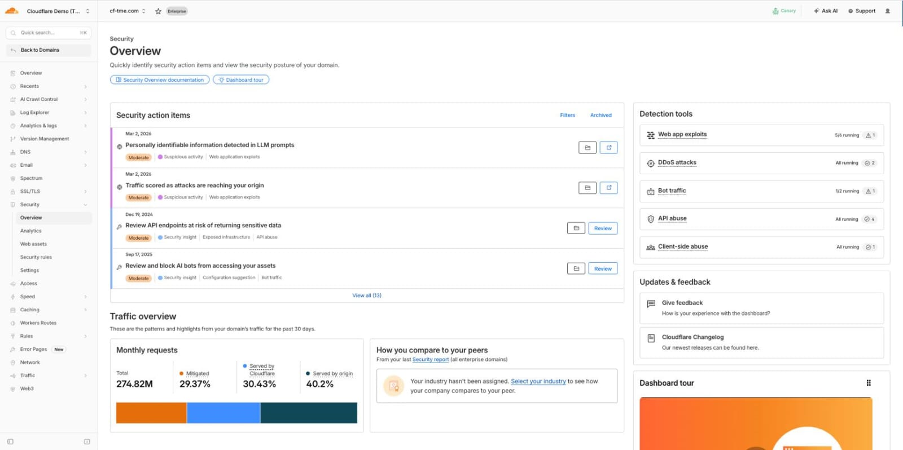

Ataques hackers atingem instituições brasileiras
Tesouro Nacional, Porto de Santos e Caixa Vida e Previdência foram atingidos por ataques cibernéticos, aumentando o alerta sobre a segurança digital no Brasil.
Saiba Mais
Cloudflare lança ferramenta para identificar vulnerabilidades na internet
A Cloudflare lançou o Zero Wire, uma ferramenta gratuita que reúne informações sobre vulnerabilidades digitais e orientações para ajudar equipes a proteger seus sistemas.
Saiba MaisAplicativo gerenciador de senhas sofre ataque
Após um ataque cibernético, o gerenciador de senhas mSecure recomendou que seus usuários alterassem senhas e reforçassem a autenticação de suas contas.
Saiba Mais